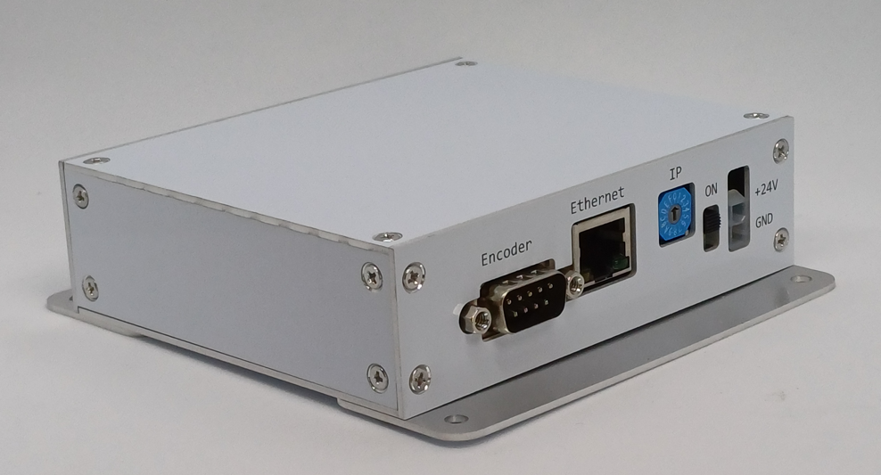

EDataS Controller
Overview
EDataS can control a single driver based on the existing PControl architecture.
• Provides stable communication through a 10/100 Mbps Ethernet connection.
IP configuration is simple and user-friendly.
• Utilizes a ring buffer, allowing continuous transmission of the next swath data even during printing.
• Supports high-efficiency data compression, enabling fast and reliable transfer of large image data.


• The communication speed of the existing PControl has been improved from 50 Mbps to 66 Mbps, enabling faster performance. For 1024-bit transmission, it supports up to 64 kHz with a transfer time of 15.4 μs.
• The head temperature can be monitored even during printing.
• Spitting and printing can be controlled using an external trigger.
The width and delay of the trigger output signal can be configured to drive a stroboscope.
• Supports both C# class library DLLs and existing RJET C-style DLLs.
• Equipped with a large 32 MB image buffer.
• A 25-bit encoder counter with an additional 1-bit sign allows representation of negative encoder values.